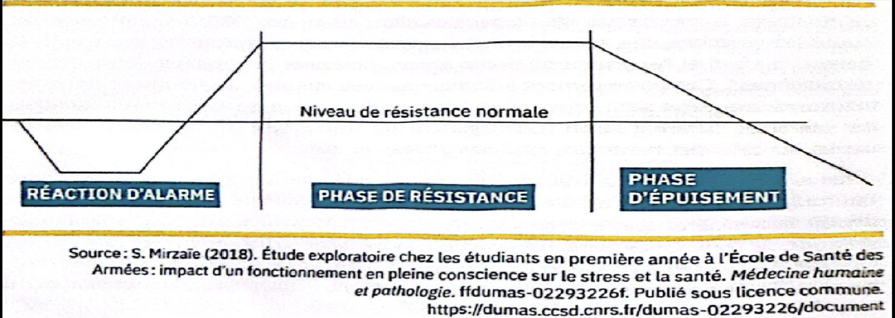

Médiation et résolution de conflits
Table des matières
- Niveaux d'intervention
- Étapes d'une médiation
- Styles de gestion (Thomas-Kilmann)
- Quand référer ailleurs
- Application en mines
L'essentiel : Résoudre un conflit, c'est rétablir la capacité des personnes ou groupes à travailler ensemble efficacement. Plusieurs approches selon la gravité : conversation directe, facilitation par un tiers, médiation formelle, arbitrage. Les conflits non résolus s'aggravent rarement par eux-mêmes : il faut intervenir.
Niveaux d'intervention
| Niveau | Approche | Quand l'utiliser |
|---|---|---|
| 1. Auto-résolution | Les personnes parlent directement | Conflit naissant, équipe avec bonne communication |
| 2. Facilitation par superviseur | Le superviseur aide la conversation | Conflit modéré, superviseur respecté des deux parties |
| 3. Médiation formelle | Tiers neutre formé qui structure la rencontre | Conflit bloqué, malentendus profonds |
| 4. Arbitrage | Décision imposée par autorité | Conflit non résolu malgré tentatives, ou nécessité de trancher |
| 5. Procédure formelle | Plainte (harcèlement, normes du travail) | Si le conflit a dérivé vers du harcèlement |
Principe : commencer par le niveau le plus léger et n'escalader que si nécessaire.
Étapes d'une médiation
| Étape | Action |
|---|---|
| 1. Préparation | Rencontre préalable avec chaque partie séparément, comprendre les enjeux |
| 2. Cadrage | Établir les règles (respect, confidentialité, écoute) |
| 3. Exposé | Chaque partie présente sa vision sans interruption |
| 4. Reformulation | Le médiateur reformule pour valider la compréhension |
| 5. Identification des intérêts | Au-delà des positions, quels sont les besoins réels? |
| 6. Génération d'options | Brainstorm de solutions possibles |
| 7. Évaluation et choix | Sélectionner les options acceptables pour les deux |
| 8. Entente | Formaliser l'accord, définir le suivi |
| 9. Suivi | Vérifier la mise en œuvre, ajuster si nécessaire |
Rôle du médiateur : neutre, structurant, non-décideur. Il facilite, il ne tranche pas.
Styles de gestion (Thomas-Kilmann)
Cinq styles selon deux axes (souci de soi, souci de l'autre)

Toucher l'image pour l'agrandirModèle Thomas-Kilmann des styles de gestion de conflit. Source : SST1010 (UQAM), séance 10. Usage personnel.
| Style | Souci de soi | Souci de l'autre | Quand l'utiliser |
|---|---|---|---|
| Compétition | Élevé | Faible | Urgence, décision impopulaire mais nécessaire |
| Collaboration | Élevé | Élevé | Enjeu important, besoin de solution durable |
| Compromis | Moyen | Moyen | Solutions partielles acceptables, urgence modérée |
| Évitement | Faible | Faible | Enjeu mineur, besoin de temps de réflexion |
| Accommodation | Faible | Élevé | Préserver la relation, enjeu mineur pour soi |
La collaboration est généralement la plus efficace pour les conflits importants, mais elle demande temps et compétences.
Quand référer ailleurs
La médiation interne ne convient pas quand
- Le conflit a dérivé vers du harcèlement (procédure formelle requise)
- Il y a violence ou menace
- L'asymétrie de pouvoir est trop grande pour une médiation équitable
- Une partie refuse de participer
- Les enjeux dépassent la compétence du médiateur (juridique, clinique)
Dans ces cas, référer vers : RH, conseiller juridique, CNESST, PAE pour soutien individuel, police pour dimension criminelle.
Application en mines
Particularités de la médiation en mine
| Aspect | Adaptation |
|---|---|
| Équipes restreintes | Confidentialité critique, peu d'anonymat possible |
| Pression de production | Trouver le moment et le lieu pour la médiation hors quart |
| Hiérarchie marquée | Le médiateur ne doit pas être hiérarchiquement lié aux parties |
| Camp Comparatif des cycles FIFO (14/14, 20/10, 21/7) | Possibilité de médiation à distance ou pendant le congé |
| Sous-traitance | Médiateur reconnu par les deux organisations |
Bonnes pratiques
- Former plusieurs médiateurs internes (conseiller SST, RH, contremaîtres formés)
- Avoir une procédure documentée et accessible
- Garantir la confidentialité, sans laquelle personne n'utilise le service
- Suivre les conflits récurrents (signal de problème structurel)
- Externaliser si nécessaire (médiateurs professionnels)
Documents et outils
| Document | Type | Source |
|---|---|---|
| Modèle Thomas-Kilmann (TKI) | Instrument | Outils RH |
| Guide CCHST sur la gestion des conflits | cchst.ca | |
| Procédure interne de médiation | Gabarit | À élaborer |
| Liste de médiateurs externes accrédités | Variables | Au besoin |
| Formation en médiation pour cadres | Programmes | Variables |
Voir le centre de ressources : 📁 Documents et outils.
Pour aller plus loin
Références
- Thomas, K. W. & Kilmann, R. H. (2008). Thomas-Kilmann Conflict Mode Instrument.
- Fisher, R. & Ury, W. (1981). Getting to yes, negotiating agreement without giving in. Penguin.
Articles wiki connexes
Pages qui pointent ici (4)
- 🏠 Wiki SST psychosociale, mines SST psychosociale
- 🔤 Index alphabétique des articles SST psychosociale
- Conflits et Harcèlement SST psychosociale
- Conflits et Harcèlement SST psychosociale